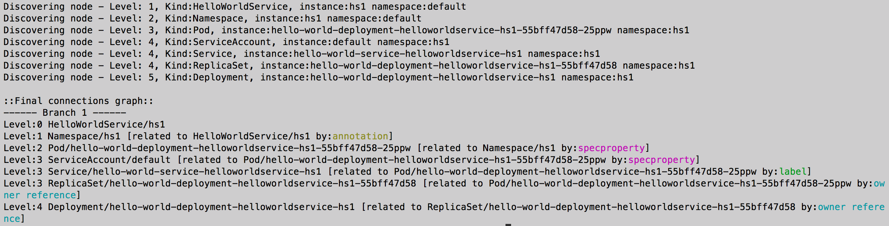

Sample Example - HelloWorldService¶
Here we demonstrate how a Provider can use KubePlus to deliver a “hello-world as-a-Service” using a Hello World Helm chart. The helm chart defines a Deployment and a Service. The Pod managed by the Deployment prints the messages that are provided as input. When registering the service, Provider defines the CPU and Memory requests and limits that should be provided to the HelloWorld Pod. KubePlus ensures that every HelloWorldService instance Pod is given the CPU and Memory requests and limits that are configured by the Provider when registering the HelloWorldService. Consumers create HelloWorldService instances and pass custom hello messages to print to the Pod.
Setup¶
In order to try this example you will need to install Kubernetes CLI (kubectl), or if you are using OpenShift, the OpenShift CLI (oc). Choose the CLI version that works with your Kubernetes version. Once the appropriate CLI is installed, follow these steps.
Open three command terminal windows. Name them as:
Cluster admin window
Provider window
Consumer window
Both cluster admin and provider will need to use KubePlus kubectl plugins.
Install KubePlus kubectl plugins
curl -L https://github.com/cloud-ark/kubeplus/raw/master/kubeplus-kubectl-plugins.tar.gz -o kubeplus-kubectl-plugins.tar.gz
gunzip kubeplus-kubectl-plugins.tar.gz
tar -xvf kubeplus-kubectl-plugins.tar
export KUBEPLUS_HOME=`pwd`
export PATH=$KUBEPLUS_HOME/plugins/:$PATH
kubectl kubeplus commands
or
oc kubeplus commands
Cluster Admin actions¶
1. Install KubePlus
Set KUBEPLUS_NS environment variable to the NAMESPACE in which you have installed KubePlus. For OpenShift users, the namespace needs to be ‘openshift-operators’.
KUBEPLUS_NS=<Namespace>
Make sure KubePlus Pod is running (Status should be ‘RUNNING’ and all 5 containers).
kubectl get pods -n $KUBEPLUS_NS
If KubePlus Pod is not running then install KubePlus first.
2. Get provider and consumer kubeconfigs
KubePlus generates separate kubeconfig files for provider and consumers with appropriate permissions. You would have generated provider kubeconfig (kubeplus-saas-provider.json) as part of installing KubePlus Operator. Retrieve KubePlus consumer kubeconfig as follows:
$ kubectl retrieve kubeconfig consumer $KUBEPLUS_NS > consumer.conf
In the steps below, use the appropriate kubeconfig in the provider and consumer actions by passing the --kubeconfig=<provider/consumer kubeconfig file> flag.
Provider action¶
1. Register HelloWorldService
Create hello-world-resource-composition:
Create HelloWorldService consumer API. Here is the hello-world-resource-composition.yaml file. Save it as hello-world-resource-composition.yaml.
apiVersion: workflows.kubeplus/v1alpha1
kind: ResourceComposition
metadata:
name: hello-world-resource-composition
spec:
# newResource defines the new CRD to be installed define a workflow.
newResource:
resource:
kind: HelloWorldService
group: platformapi.kubeplus
version: v1alpha1
plural: helloworldservices
# URL of the Helm chart that contains Kubernetes resources that represent a workflow.
chartURL: https://github.com/cloud-ark/operatorcharts/blob/master/hello-world-chart-0.0.2.tgz?raw=true
chartName: hello-world-chart
# respolicy defines the resource policy to be applied to instances of the specified custom resource.
respolicy:
apiVersion: workflows.kubeplus/v1alpha1
kind: ResourcePolicy
metadata:
name: hello-world-service-policy
spec:
resource:
kind: HelloWorldService
group: platformapi.kubeplus
version: v1alpha1
policy:
# Add following requests and limits for the first container of all the Pods that are related via
# owner reference relationship to instances of resources specified above.
podconfig:
limits:
cpu: 200m
memory: 2Gi
requests:
cpu: 100m
memory: 1Gi
# resmonitor identifies the resource instances that should be monitored for CPU/Memory/Storage.
# All the Pods that are related to the resource instance through either ownerReference relationship, or all the relationships
# (ownerReference, label, annotation, spec properties) are considered in calculating the statistics.
# The generated output is in Prometheus format.
resmonitor:
apiVersion: workflows.kubeplus/v1alpha1
kind: ResourceMonitor
metadata:
name: hello-world-service-monitor
spec:
resource:
kind: HelloWorldService
group: platformapi.kubeplus
version: v1alpha1
# This attribute indicates that Pods that are reachable through all the relationships should be used
# as part of calculating the monitoring statistics.
monitorRelationships: all
The respolicy section in the resource composition defines the ResourcePolicy that the provider configures for this service. Here it defines the cpu and memory requests and limits that need to be configured for service instances of this service.
Create hello-world-resource-composition as follows:
kubectl create -f hello-world-resource-composition.yaml -n $KUBEPLUS_NS --kubeconfig=kubeplus-saas-provider.json
or
oc create -f hello-world-resource-composition.yaml -n $KUBEPLUS_NS --kubeconfig=kubeplus-saas-provider.json
Wait till HelloWorldService CRD is registered in the cluster.
until kubectl get crds --kubeconfig=kubeplus-saas-provider.json | grep hello ; do echo "Waiting for HelloworldService CRD to be registered.."; sleep 1; done
or
until oc get crds --kubeconfig=kubeplus-saas-provider.json | grep hello ; do echo "Waiting for HelloworldService CRD to be registered.."; sleep 1; done
Grant permission to the consumer to create service instances.
kubectl grantpermission consumer helloworldservices kubeplus-saas-provider.json $KUBEPLUS_NS
Consumer actions¶
1. Create HelloWorldService instance
HelloWorldService instances can be created using either kubectl or consumer ui that KubePlus provides.
Using Consumer UI
The consumer UI is part of KubePlus and runs on the cluster. Access it as follows:
$ wget https://raw.githubusercontent.com/cloud-ark/kubeplus/master/deploy/open-consumer-ui.sh
$ chmod +x open-consumer-ui.sh
$ ./open-consumer-ui.sh consumer.conf
The HelloWorldService will be available at following URL:
$ http://localhost:5000/service/HelloWorldService
If you are working with the KubePlus Vagrant VM, access the service at following URL:
$ http://192.168.33.10:5000/service/HelloWorldService
The UI provides a form to input values that need to be provided when creating a service instance. You can also check the API documentation for the service on the UI. Because the cluster admin has granted permission to the consumer to create the HelloWorldService instances, you will be able to create an instance of HelloWorldService through the UI. Here are the screenshots of using Consumer UI.
Check API Doc
Create instance - KubePlus generates a form corresponding to the fields defined in the underlying chart’s values.yaml file.
Created instance details
Using CLI
Check the HelloWorldService API documentation
kubectl man HelloWorldService -k consumer.conf
You should see following output:
KIND: HelloWorldService
GROUP: platformapi.kubeplus
VERSION: v1alpha1
DESCRIPTION:
Here is the values.yaml for the underlying Helm chart representing this resource.
The attributes in values.yaml become the Spec properties of the resource.
::::::::::::::
/hello-world-chart/values.yaml
::::::::::::::
# Default value for namespace.
greeting: Hello World!
Create HelloWorldService instance:
Copy below YAML and save it as hello-world-service.yaml
apiVersion: platformapi.kubeplus/v1alpha1
kind: HelloWorldService
metadata:
name: hs1
spec:
greeting: Hello hello hello
kubectl create -f hello-world-service.yaml --kubeconfig=consumer.conf
or
oc create -f hello-world-service.yaml --kubeconfig=consumer.conf
This will create hs1 instance in the default namespace.
Check if the service instance has been created:
kubectl get helloworldservices --kubeconfig=consumer.conf
kubectl describe helloworldservices hs1 --kubeconfig=consumer.conf
or
oc get helloworldservices --kubeconfig=consumer.conf
oc describe helloworldservices hs1 --kubeconfig=consumer.conf
Verify that the Status field is populated in hs1 instance.
Verify that HelloWorldService has been started
HELLOWORLD_POD=`kubectl get pods -A | grep hello-world-deployment-helloworldservice | awk '{print $2}'`
HELLOWORLD_NS=`kubectl get pods -A | grep hello-world-deployment-helloworldservice | awk '{print $1}'`
kubectl port-forward $HELLOWORLD_POD -n $HELLOWORLD_NS 8082:5000 &
curl localhost:8082
or
HELLOWORLD_POD=`oc get pods -A | grep hello-world-deployment-helloworldservice | awk '{print $2}'`
HELLOWORLD_NS=`oc get pods -A | grep hello-world-deployment-helloworldservice | awk '{print $1}'`
oc port-forward $HELLOWORLD_POD -n $HELLOWORLD_NS 8082:5000 &
curl localhost:8082
You should see following output:
Hello hello hello
Provider actions (cont.)¶
On the provider window, perform following steps:
Install Docker and verify that you are able to run docker commands without requiring sudo.
docker ps
This should return without any errors.
1. Monitor HelloWorldService instance
HELLOWORLD_NS=`kubectl get pods -A --kubeconfig=kubeplus-saas-provider.json | grep hello-world-deployment-helloworldservice | awk '{print $1}'`
or
HELLOWORLD_NS=`oc get pods -A --kubeconfig=kubeplus-saas-provider.json | grep hello-world-deployment-helloworldservice | awk '{print $1}'`
kubectl metrics HelloWorldService hs1 $HELLOWORLD_NS -k kubeplus-saas-provider.json -o prometheus
You should see output of the following form:

2. Verify resource requests and limits have been set on the Pod that belongs to HelloWorldService instance
kubectl get pods $HELLOWORLD_POD -n $HELLOWORLD_NS -o json --kubeconfig=kubeplus-saas-provider.json | jq -r '.spec.containers[0].resources'
or
oc get pods $HELLOWORLD_POD -n $HELLOWORLD_NS -o json --kubeconfig=kubeplus-saas-provider.json | jq -r '.spec.containers[0].resources'
You should see following output:

3. Check resource relationship graph for HelloWorldService instance
kubectl connections HelloWorldService hs1 $KUBEPLUS_NS -k kubeplus-saas-provider.json
or
oc connections HelloWorldService hs1 $KUBEPLUS_NS -k kubeplus-saas-provider.json
You should see following output:
4. Visualize the relationship graph
kubectl connections HelloWorldService hs1 $KUBEPLUS_NS -o png -k kubeplus-saas-provider.json
or
oc connections HelloWorldService hs1 $KUBEPLUS_NS -o png -k kubeplus-saas-provider.json